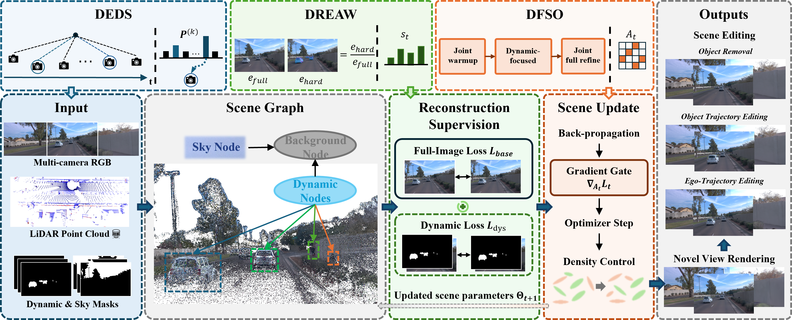
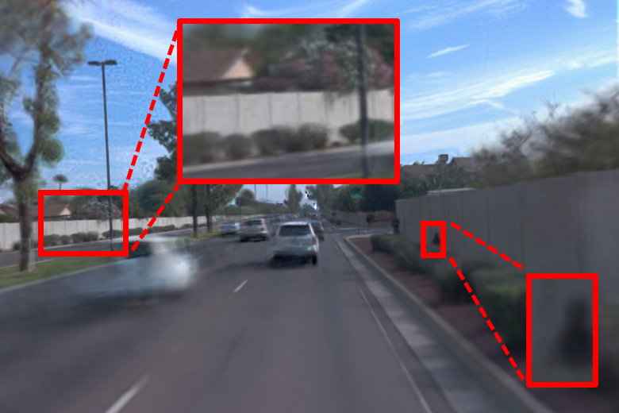
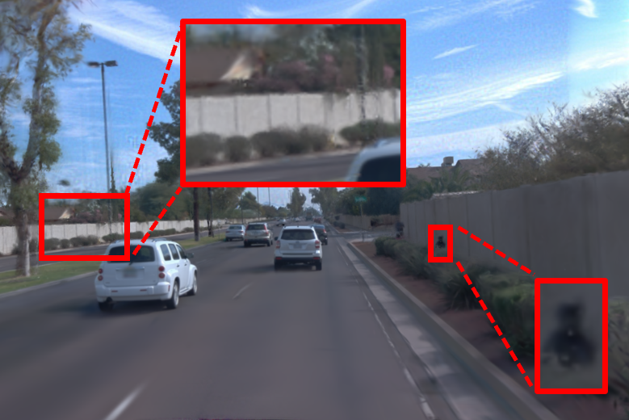
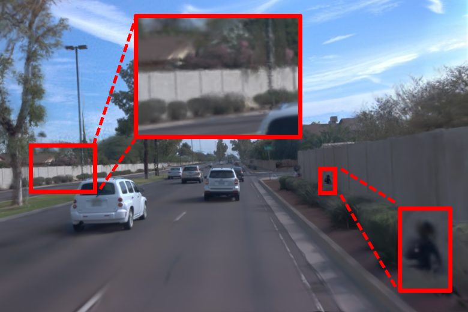
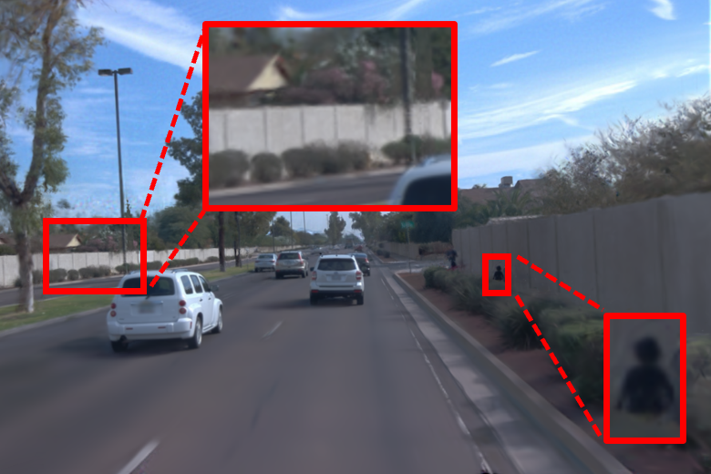
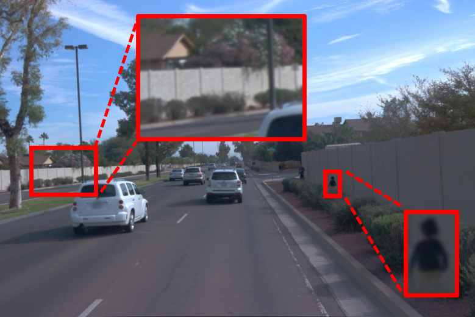

Recent advances in 3D Gaussian Splatting (3DGS) have demonstrated the feasibility of dynamic driving-scene reconstruction. However, the optimization process is often substantially imbalanced: static backgrounds dominate observations and converge relatively early, whereas dynamic actors receive sparse and uneven supervision due to limited visibility and frequent occlusions. Consequently, uniform sampling and joint optimization tend to over-allocate optimization effort to static regions while leaving dynamic actors under-optimized. To address this issue, we propose DriveAdapt-GS, an adaptive training-allocation framework that coordinates the active parameter subspace, dynamic-region supervision strength, and training-view sampling. Specifically, Dynamic-Focused Staged Optimization temporarily restricts parameter updates to dynamic nodes and restores joint refinement according to online reconstruction progress; Dynamic Region Error-Adaptive Weighting adapts dynamic-region supervision according to online reconstruction errors; and Dynamic Error-Driven Sampling prioritizes challenging training views that exhibit recent reconstruction improvement. Compared with OmniRe, our method improves human PSNR by 1.16 dB on Waymo and dynamic PSNR by 1.35 dB on nuScenes. Experiments demonstrate that our method effectively improves dynamic reconstruction while maintaining overall scene quality.

Our framework adaptively reallocates optimization effort at the data, loss, and parameter levels. Dynamic-Focused Staged Optimization, Dynamic Region Error-Adaptive Weighting, and Dynamic Error-Driven Sampling respectively determine the sampling distribution, dynamic-region loss scale, and active parameter set, jointly improving the optimization of dynamic actors.
Here, we present the comparisons of our method against the current state-of-the-art methods, including DeformGS, PVG, StreetGS, and OmniRe.
We show the comparisons with baselines on individual sequences from the Waymo Open dataset.





Benefiting from the structured scene factor graph and the high-quality reconstruction produced by our method, our method also supports effective downstream scene editing.